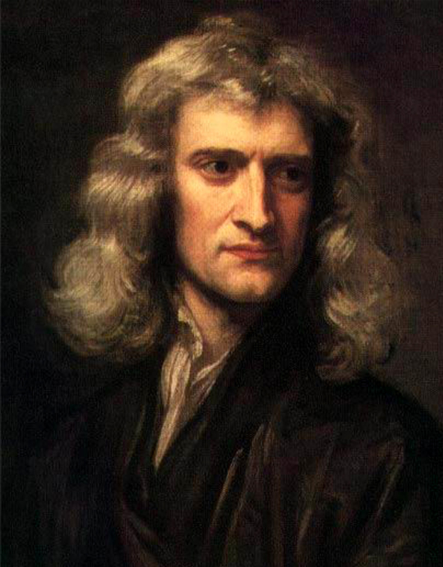
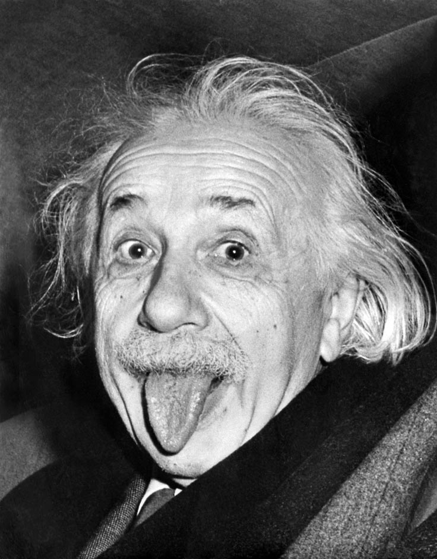
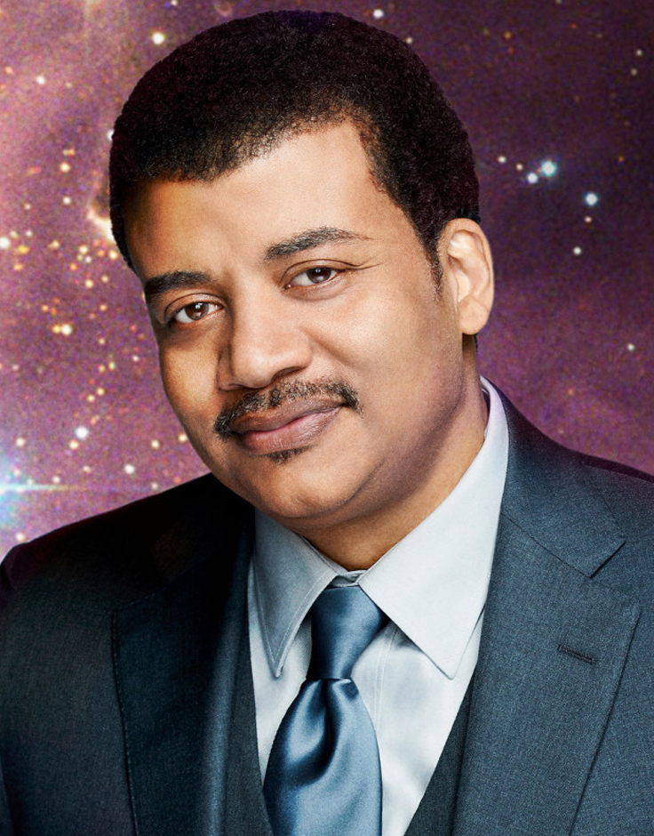

We hope you enjoy your stay. Education is our top priority. It does not matter where you come from but what you know.
OUR PHYSICISTS
Sir Isaac Newton
Sir Isaac Newton 25 December 1642 – 20 March 1726/7 was an English physicist and mathematician (described in his own day as a "natural philosopher") who is widely recognised as one of the most influential scientists of all time and as a key figure in the scientific revolution. His book Philosophiæ Naturalis Principia Mathematica ("Mathematical Principles of Natural Philosophy"), first published in 1687, laid the foundations for classical mechanics. Newton made seminal contributions to optics, and he shares credit with Gottfried Leibniz for the development of calculus.
Albert Einstein
Albert Einstein 14 March 1879 – 18 April 1955 was a German-born theoretical physicist. Einstein's work is also known for its influence on the philosophy of science. He developed the general theory of relativity, one of the two pillars of modern physics (alongside quantum mechanics). Einstein is best known in popular culture for his mass–energy equivalence formula E = mc2 (which has been dubbed "the world's most famous equation"). He received the 1921 Nobel Prize in Physics for his "services to theoretical physics", in particular his discovery of the law of the photoelectric effect, a pivotal step in the evolution of quantum theory.
Neil deGrasse Tyson
Neil deGrasse Tyson October 5, 1958 is an American astrophysicist, cosmologist, author, and science communicator. Since 1996, he has been the Frederick P. Rose Director of the Hayden Planetarium at the Rose Center for Earth and Space in New York City. The center is part of the American Museum of Natural History, where Tyson founded the Department of Astrophysics in 1997 and has been a research associate in the department since 2003.
Physics
Physics is one of the oldest academic disciplines, perhaps the oldest through its inclusion of astronomy. Over the last two millennia, physics was a part of natural philosophy along with chemistry, certain branches of mathematics, and biology, but during the scientific revolution in the 17th century, the natural sciences emerged as unique research programs in their own right. Physics intersects with many interdisciplinary areas of research, such as biophysics and quantum chemistry, and the boundaries of physics are not rigidly defined. New ideas in physics often explain the fundamental mechanisms of other sciences while opening new avenues of research in areas such as mathematics and philosophy.
Experiments
An experiment is an orderly procedure carried out with the goal of verifying, refuting, or establishing the validity of a hypothesis. Experiments provide insight into cause-and-effect by demonstrating what outcome occurs when a particular factor is manipulated. Experiments vary greatly in their goal and scale, but always rely on repeatable procedure and logical analysis of the results. There also exist natural experimental studies. A child may carry out basic experiments to understand the nature of gravity, while teams of scientists may take years of systematic investigation to advance the understanding of a phenomenon. Experiments and other types of hands-on activities are very important to student learning in the science classroom. Experiments can raise test scores and help a student become more engaged and interested in the material they are learning, especially when used over time. Experiments can vary from personal and informal natural comparisons (e.g. tasting a range of chocolates to find a favorite), to highly controlled (e.g. tests requiring complex apparatus overseen by many scientists that hope to discover information about subatomic particles). Uses of experiments vary considerably between the natural and human sciences.
Chemistry
Chemistry is a branch of physical science that studies the composition, structure, properties and change of matter. Chemistry is chiefly concerned with atoms and molecules and their interactions and transformations, for example, the properties of the chemical bonds formed between atoms to create chemical compounds. As such, chemistry studies the involvement of electrons and various forms of energy in photochemical reactions, oxidation-reduction reactions, changes in phases of matter, and separation of mixtures. Preparation and properties of complex substances, such as alloys, polymers, biological molecules, and pharmaceutical agents are considered in specialized fields of chemistry.
About
We want to demonstrate that education is the fundamental resource in life. Despite your background you will be able to access our website and learn about existance of our universe.
Bill Nye promotes free science education in our flash animation. He believes that everyone deserves to know where and why we live.

CONTACT
FOLLOW US ON TWITTER
Get the latest tweets about discoveries, experiments and workshops!